Case studies & projects
Seven years designing high-stakes product flows for crypto exchanges and regulated fintech — institutional KYB onboarding, multi-jurisdiction KYC, on-chain compliance tools, and the design systems that let small teams ship reliably under regulatory pressure.
Recent work

Led end-to-end redesign of institutional KYB for a global crypto exchange — research found 82% of applicants submitted multiple times and only 41% completed document upload. Replaced a text-heavy flow with guided entity selection and a dynamic document checklist.
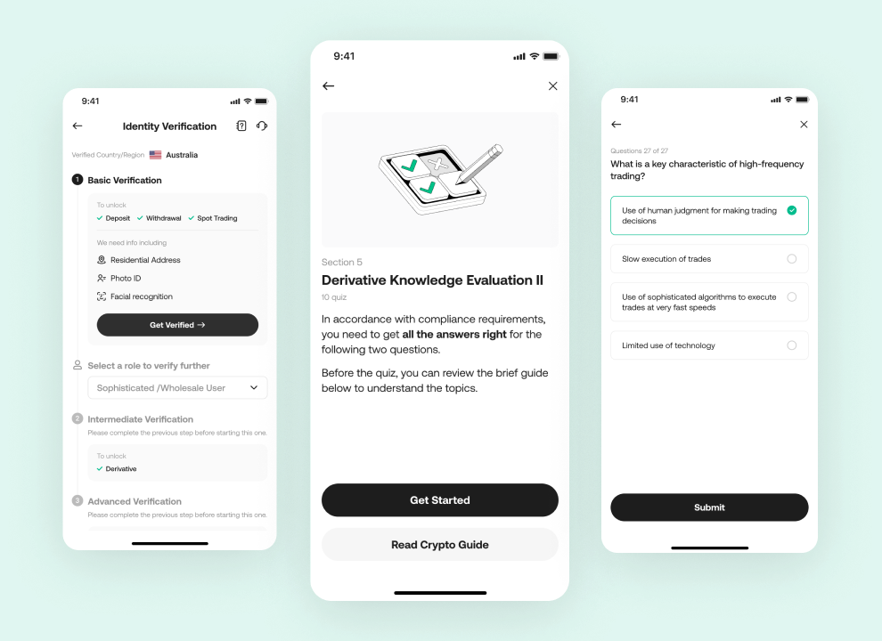
0→1 KYC for two simultaneous regulated launches — AUSTRAC for Australia and MiCA for Europe. Shared design process with jurisdiction-specific flows, balancing regulatory requirements against retail conversion under fixed go-live deadlines.
Redesigned the asset home so users can see their full portfolio and investment performance in one place — crypto and traditional holdings, allocation, and P&L without digging through tabs.
Featured work
Four projects that define my approach to compliance-driven product design — an institutional verification overhaul, multi-jurisdiction retail launches, a design system built for a small team shipping seven simultaneous product workstreams, and an on-chain fund-flow investigation tool.
Led end-to-end redesign of institutional KYB for a global crypto exchange — research found 82% of applicants submitted multiple times and only 41% completed document upload. Replaced a text-heavy flow with guided entity selection and a dynamic document checklist.
0→1 KYC for two simultaneous regulated launches — AUSTRAC for Australia and MiCA for Europe. Shared design process with jurisdiction-specific flows, balancing regulatory requirements against retail conversion under fixed go-live deadlines.

Led rescue of KuCoin's broken CS agent workspace for 200+ reps — 2-week sprint, live observation, three redesigned flows, and AI Reply Suggestions shipped. Simultaneously delivered six other internal tools under regulatory deadlines, with a shared component library enabling consistent quality at 3.5-designer scale.

Revamped the transaction-investigation flow — analyst interviews mapped to a redesigned graph view, evidence panel, and case-notes module.
Crypto & exchange product
Consumer-facing exchange work and analyst-facing compliance tools — the full product surface connecting users and on-chain data to regulatory requirements.
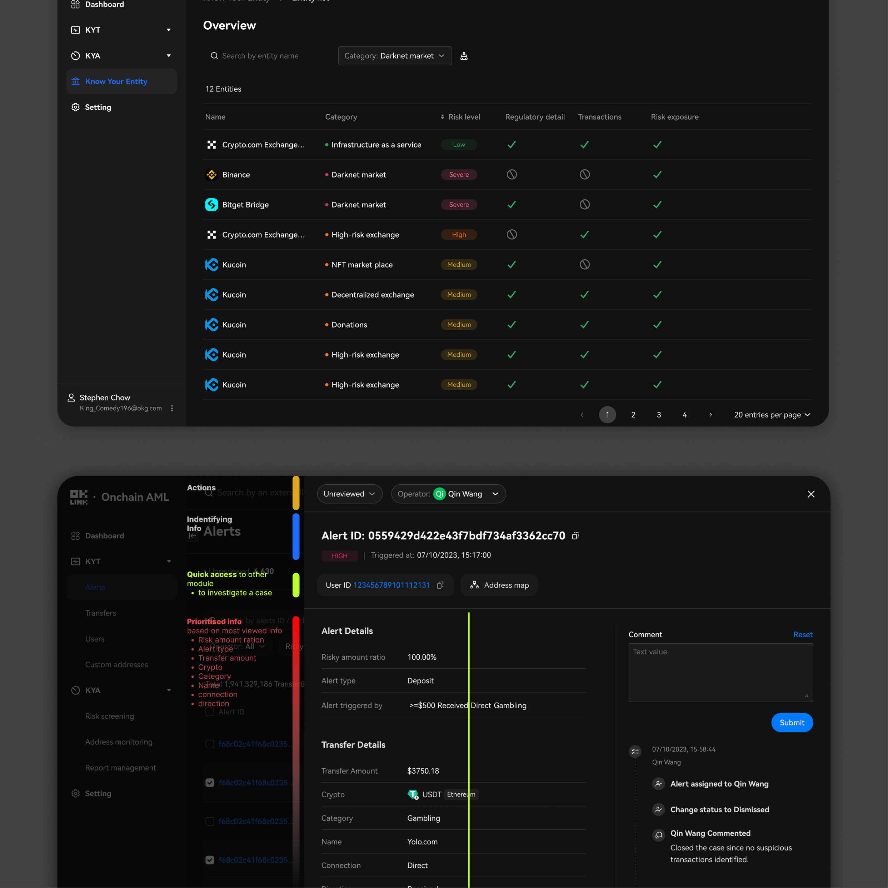
Designed the on-chain transaction risk module from analyst interviews — surfacing the signals that drive a flag, not just the data behind them.

Outlined the risks behind a token in plain language and at-a-glance signals, helping retail users avoid losses on volatile assets.
Design leadership
The team practices, hiring infrastructure, and measurement frameworks behind the featured work — how I approach design leadership beyond the artifact.
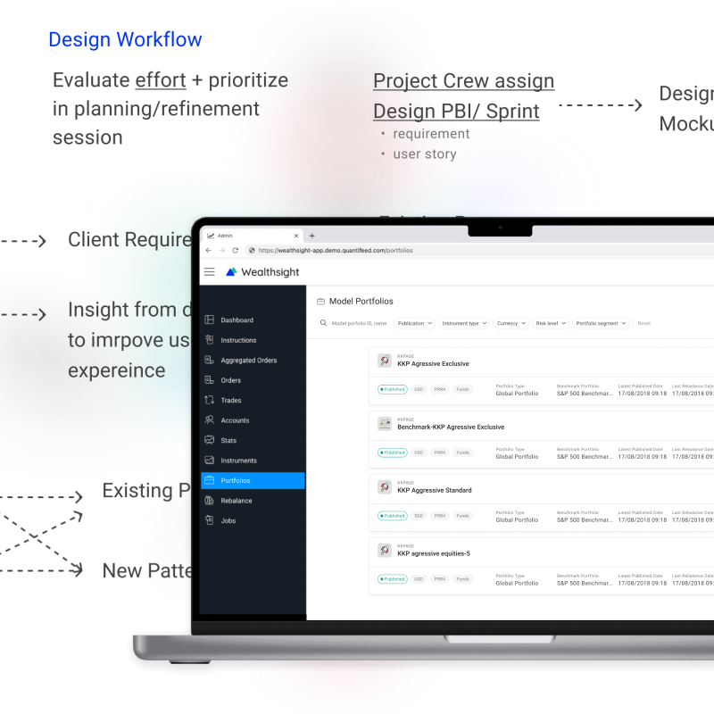
Mapped handoffs between design, product, and engineering, then established review rituals that stuck.

Built a structured rubric and interview format for fair, consistent design hiring.

Defined metrics, events, and dashboards to track UX as a first-class product signal — partnering with data and PM.

Roadmap framework grounded in user research — interview synthesis, journey mapping, and a scoring rubric shared by PMs and designers.
Fintech & wealth management
Earlier product work at Quantifeed — financial dashboards and a component system built for wealth-management advisors and retail apps.

One dashboard pattern serving portfolio managers, financial advisors, and white-labeled retail apps — workshops reconciled professional and retail mental models.
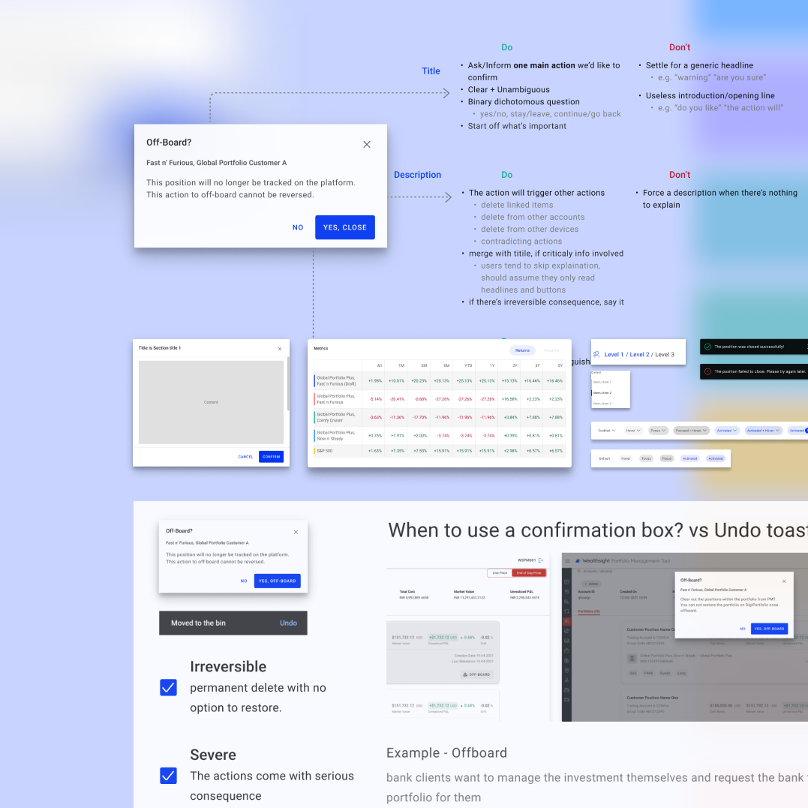
Foundations, components, UX writing, and accessibility guidance — built with the engineering team for consistent delivery across squads.
Additional & earlier work
Earlier and smaller-scope projects — included for context and range.

Heuristic evaluation and IA reshaping for advisor workflows.

Validated a new portfolio comparison pattern before scale rollout.

Blank page to shippable MVP with two engineers.

End-to-end recruiting experience from invite to first deal.

Robotic lights guiding sequential tasks — HCI master thesis.
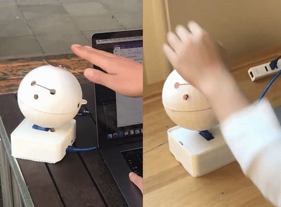
Remote warmth exchange — presented at HRI 2018.

Unity prototype and elicitation study on 3D interaction.


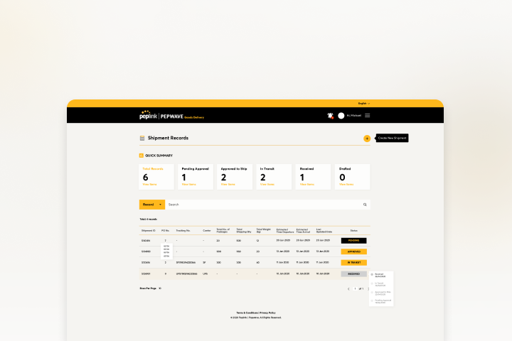
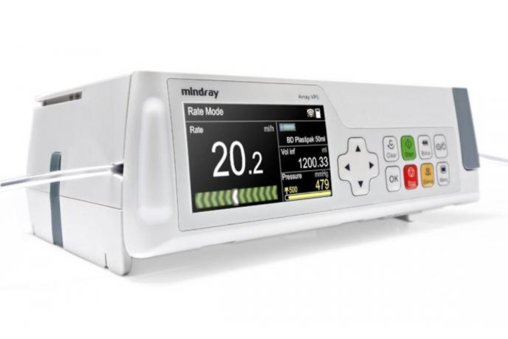
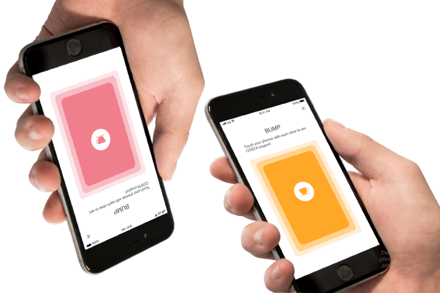
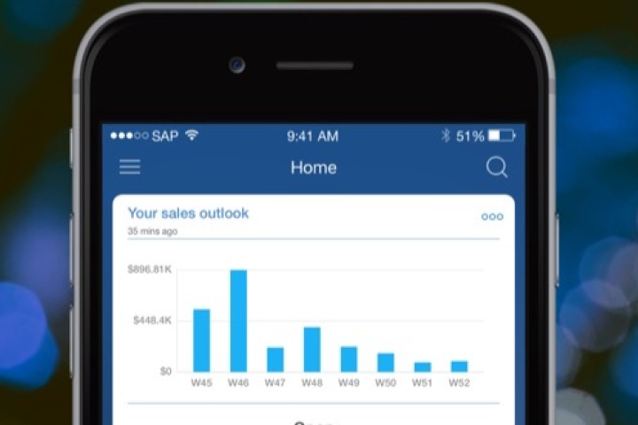
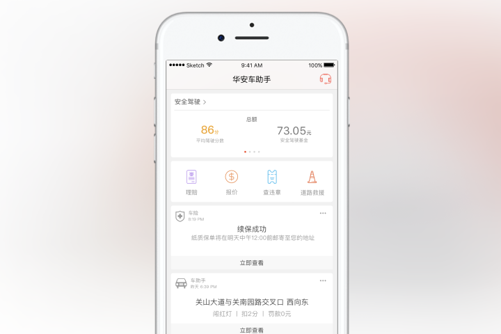
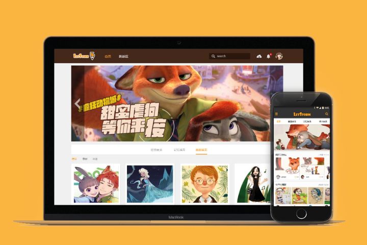
Crypto & compliance
Replaced a text-heavy verification flow with guided selection and a document checklist, designed against research showing 82% of users submitted multiple applications.
Designed the on-chain transaction risk module from analyst interviews — surfacing the signals that drive a flag, not just the data behind them.
Outlined the risks behind a token in plain language and at-a-glance signals, helping retail users avoid losses on volatile assets.
Balanced AUSTRAC compliance requirements with a calm, fast onboarding — translating legal language into user-facing steps.
Revamped the transaction-investigation flow — analyst interviews mapped to a redesigned graph view, evidence panel, and case-notes module.
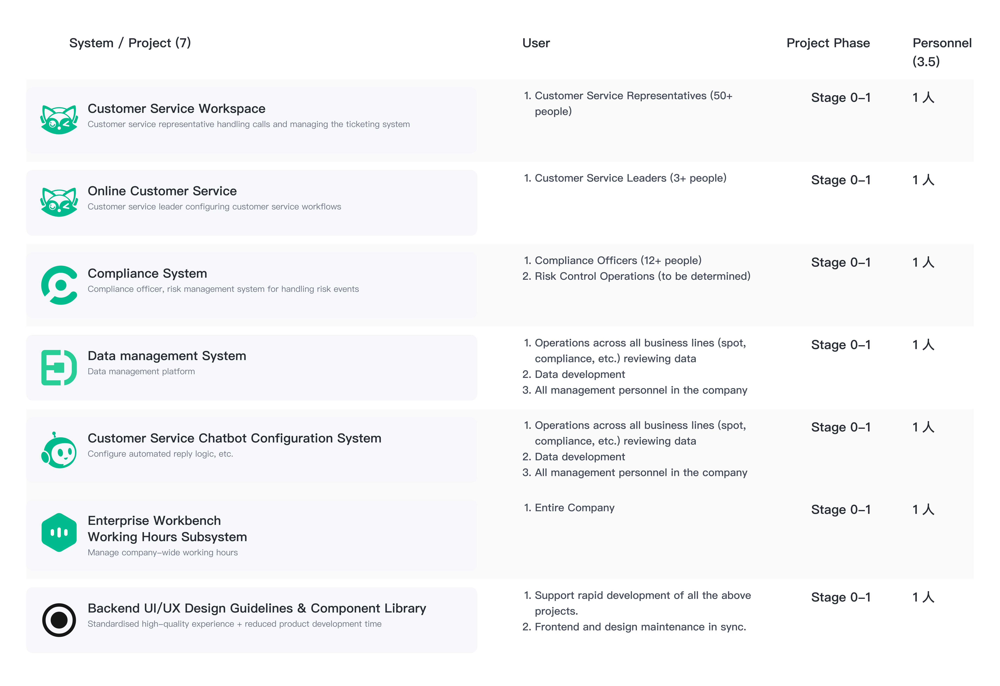
Discovery, IA, and component design across compliance, customer service, and operations tools — partnered with engineering under tight regulatory deadlines.
Fintech & wealth management
One dashboard pattern serving portfolio managers, financial advisors, and white-labeled retail apps — workshops reconciled professional and retail mental models.
Heuristic evaluation surfaced friction across the portfolio-creation flow; reshaped the IA and primary actions to match advisor workflows.
Iterated on the data visualisation behind portfolio comparisons, then ran an A/B test to validate the change before wider rollout.
Foundations, components, UX writing, and accessibility guidance — built with the engineering team for consistent delivery across squads.
Leadership & strategy
A roadmap framework grounded in user research — interview synthesis, journey mapping, and a scoring rubric shared by PMs and designers.
Defined the metrics, events, and dashboards we needed to track user experience as a first-class product signal — partnering with data and PM.
Built a structured rubric and interview format to bring fairness and consistency to design hiring at the company.
Mapped the handoff between design, product, and engineering, then established a workflow and review rituals that stuck.
Other product work
From blank page to shippable MVP — defined the editor canvas, layer model, and review workflow with two engineers.
Designed the end-to-end onboarding for new insurance agents, from invite to first deal — concept testing through MVP1.
Research & academia
Three robotic lights that follow or guide people through sequential tasks — exploring which factors shape the perception of "smartness".
Two bots that exchange touch warmth across distance and turn toward the sender's voice when receiving a message.
Explored intuitive ways to interact with 3D data on a multi-surface setup — Unity prototype, elicitation study, and literature review.
Additional & earlier work
Earlier and smaller-scope projects — included for context and range.